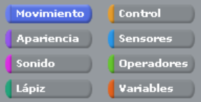

Programación con Scratch For Arduino
La programación en bloques con S4A consiste en utilizar un entorno visual, basado en Scratch, que permite crear programas mediante piezas gráficas que encajan entre sí como un rompecabezas, facilitando el control de placas Arduino y el desarrollo de proyectos interactivos sin necesidad de escribir código en lenguajes textuales.
Los comandos de Scratch se dividen en ocho categorías con las que se pueden insertar y controlar sonidos, imágenes, variables y otros elementos. Para crear un programa en Scratch sólo hay que arrastrar los elementos multimedia el escenario y añadir comandos en la pestaña Programas.
Para saber la función de cada bloque de código, puedes visitar la siguiente página: aprendiendoarduino
Práctica N° 1: Salidas Digitales
Programar en S4A un dado digital que genere un número al azar entre 1 y 6 y lo muestre con LEDs, simulando un dado real.
Pasos a seguir:
- Armar el circuito en la protoboard como en el modelo.
- Para realizar la programación, declarar una variable llamada numero.
- Usar el bloque número al azar entre 1 y 6.
- Programar condicionales para encender LEDs según el valor de numero.
- Iniciar el programa con el bloque al presionar bandera verde.
- Detenerlo con el bloque al presionar tecla espacio → detener todo.
- Diseñar los disfraces como un dado tradicional.
- Completar el formato: Práctica 1 y subirlo a la carpeta S4A de tu DRIVE.
Desafío de mejora:
Actualmente, el dado se inicia con la bandera verde y se detiene con la barra espaciadora. El desafío es lograr que al presionar nuevamente la barra espaciadora el dado vuelva a lanzarse sin necesidad de tocar la bandera verde.
Pista: crea una nueva variable (por ejemplo estado) que alterne entre activo y pausado. Usa condicionales para que el bucle solo ejecute el dado cuando el estado sea activo.